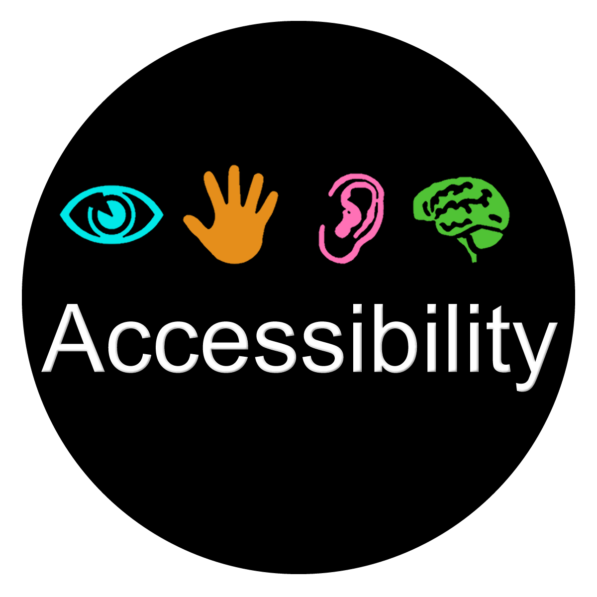
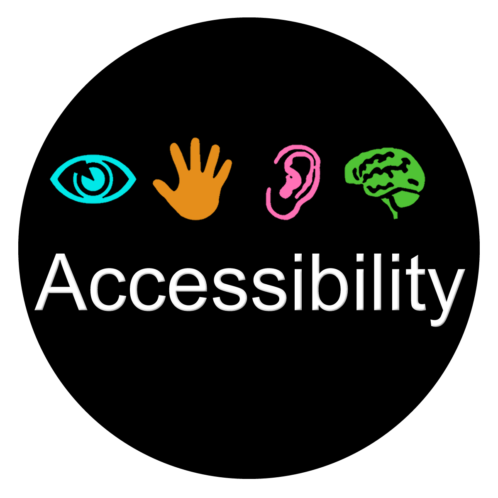
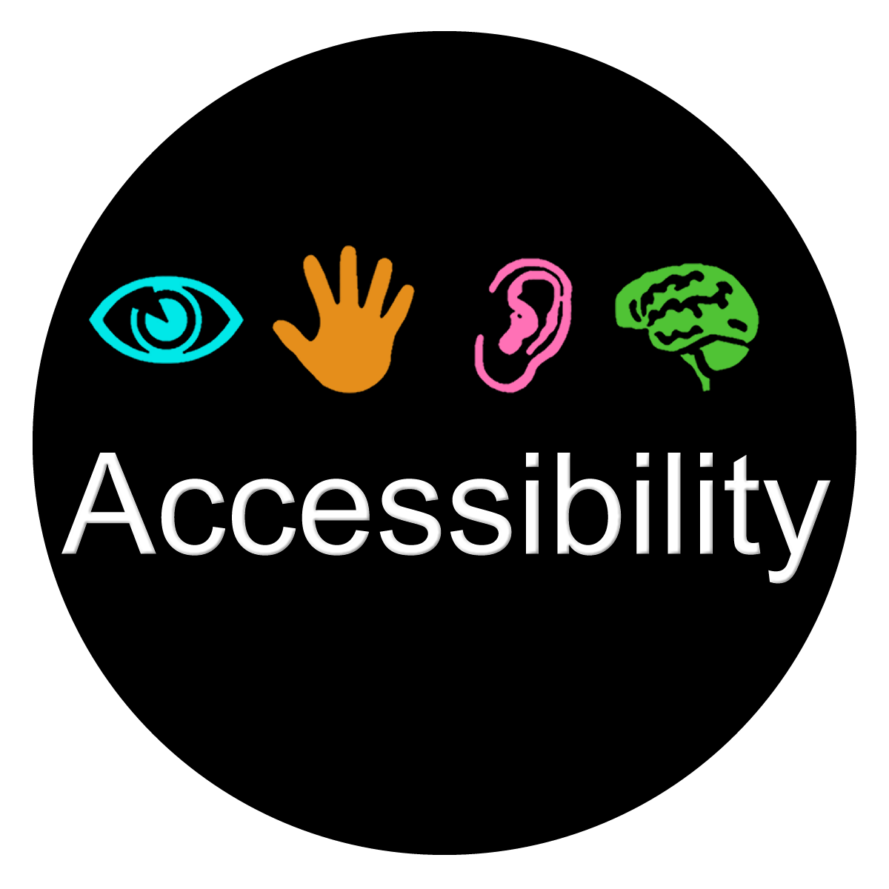

Too many tools are built for the average user — but there's no such thing. I'm committed to creating digital experiences that empower people of all abilities, learning styles, and backgrounds.
Accessibility isn't a feature. It's the starting point.
